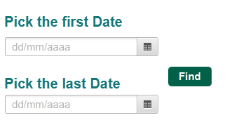
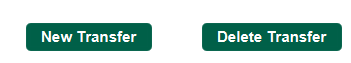
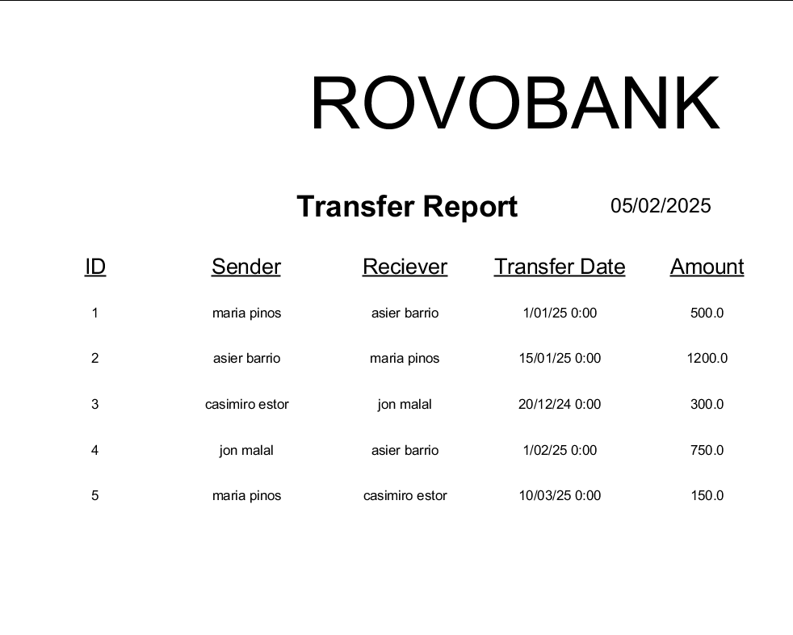

This windows will show you all accounts or filtered based on different criteria. You can also create, modify or delete transfers.
This section of the application contains a combobox that will let you choose between 3 filters those being Sender, Reciever and Id. Once you choose one of the filter you will have write something in the textfield and click on the find button in order to make the filter work. If you choose a sender or reciever you must write both the name and/or surname y the have one, if instead you choose id you must write one of the id numbers.
This section will filter the table betwen the 2 dates that you put in. and must choose in the upper datepicker a date that is before the lower datepicker.
There are two ways to create a transfer. Either by pressing the button New Transfer located at the center right
or by pressing New Transfer in the contextual menu. The contextual menu can be accessed by pressing the right button on the mouse while having the pointer on the table.
It is important to notice that all created transfers comes with default data and should be modified.
Modify Transfer dataTo modify the data on the table you can do it by double clicking in the cell containing the information that you want to change. The only column you can't edit/change is the trasnferId. The date of the creation can be modified either by entering the date manually using the format "dd/MM/yyyy" or by pressing the calendar button and choosing a valid date
You can also change the value of the amount to another cuurency on the center left by changing the combobox
Delete TransferTo delete a transfer it is mandatory to have a transfer selected, Otherwise the options for deleting accounts will not be available. To delete the transfer first you click on an account in the table and then press the button Delete Transfer that is located at the center right area, next to the new Account button or below the new Account in the context Menu. Only one transfer can be deleted at a time.
Print the Transfer reportYou can use the tables contextual menu and clicking on Pint Report will open a new window where you can see a document containing a list of all the accounts of RovoBank
 Exiting the applicationPressing the X at the top right most corner will prompt a message confirming your intention of leaving the application. Click on yes will close the application.